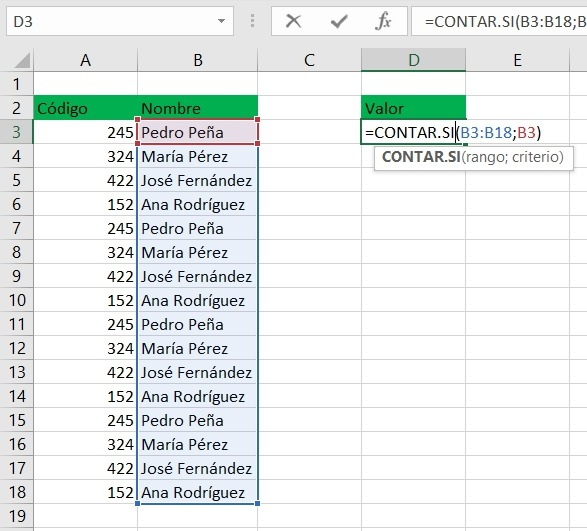
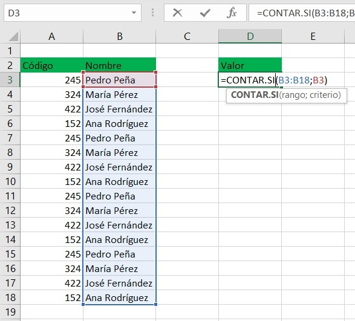

CONTAR.SI, es una de las funciones estadisticas, para contar el numero de celdas que cumplen un criterio; por ejemplo, para contar el número de veces que un determinado club aparece en una lista de torneos.
la variacion de .SI existe para multiples funciones y basicamente es para poder aplicar esta funcion ligada a un condicional
 
